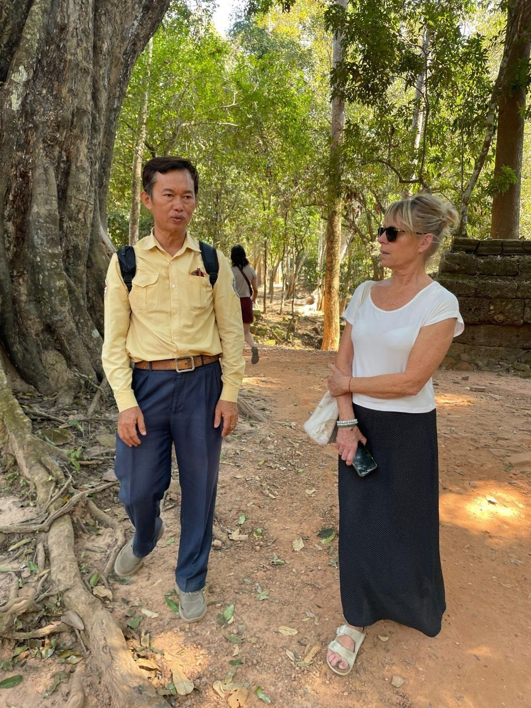
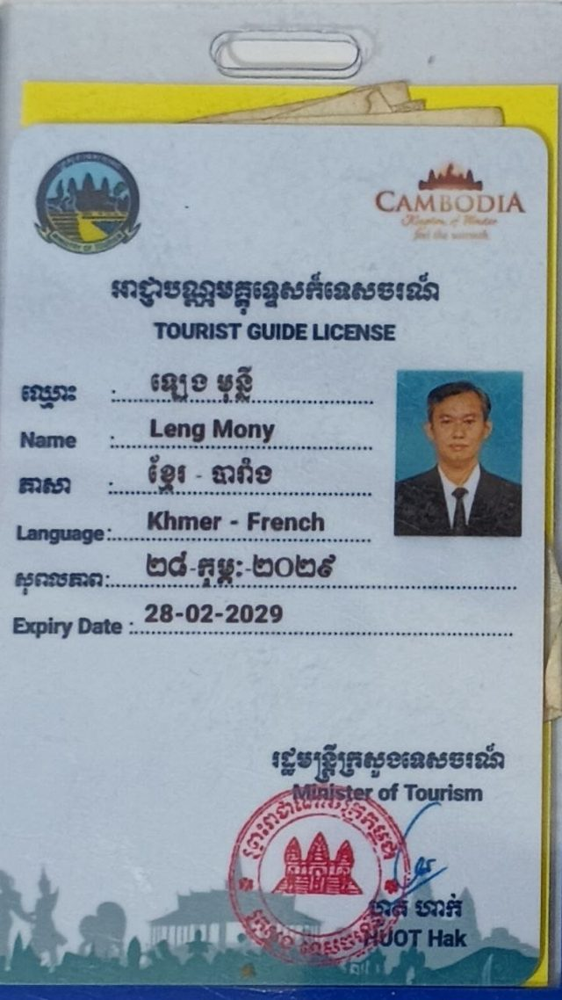

Guide touristique expérimenté et passionné, titulaire d'une licence officielle délivrée par le gouvernement. Une connaissance profonde du patrimoine historique, culturel et naturel du pays, et le métier d'accompagner des visiteurs venus d'ici comme d'ailleurs.
Les premiers pas
Il y a plus de vingt ans, l'aventure a commencé. Le Cambodge s'ouvrait au monde, et je devenais guide par vocation, avec le désir de partager la résilience et la beauté de mon pays.
L'âme des temples
Au fil des années, j'ai appris que mon rôle ne se limite pas à transmettre des faits historiques. Il consiste à créer une connexion entre le visiteur et la pierre, entre le passé et le présent. Une date se retient une semaine. Une émotion se garde toute une vie.
Une vie de partage
Témoin de l'évolution du Cambodge, j'ai eu l'honneur de guider des voyageurs venus du monde entier à travers les temples d'Angkor, les rives du Tonlé Sap et les villes chargées d'histoire. Chaque visite est une rencontre unique.

Licence officielle de guide touristique
Délivrée par le Ministère du Tourisme du Royaume du Cambodge. Langues de travail : khmer et français. Une licence de guide est obligatoire pour accompagner des visiteurs sur les sites du parc archéologique d'Angkor.
Épilogue
Aujourd'hui, avec plus de deux décennies d'expérience, je regarde en arrière avec fierté. Je ne suis plus seulement un témoin des temples : je suis un passeur de mémoire.
Ce métier m'a appris la patience, l'écoute et l'importance du partage culturel. Chaque sourire échangé, chaque coucher de soleil partagé sur le Tonlé Sap ou sur les terrasses d'Angkor forme la trame d'une vie dédiée à l'hospitalité khmère. L'histoire continue de s'écrire chaque jour sous le vent doux du royaume.
Aujourd'hui, avec vingt ans d'expérience, je reste un humble passeur de mémoire, prêt à vous faire découvrir les secrets du royaume merveilleux.
An experienced and committed tour guide, holding an official licence issued by the government. Deep knowledge of the country's historical, cultural, and natural heritage, and the daily craft of accompanying visitors from Cambodia and abroad.
First steps
More than twenty years ago, the adventure began. Cambodia was opening to the world, and I became a guide by vocation, wanting to share the resilience and the beauty of my country.
The soul of the temples
Over the years, I learned that my role is not simply to pass on historical facts. It is to build a connection between the visitor and the stone, between the past and the present. A date stays with you for a week. A feeling stays for life.
A life of sharing
Having watched Cambodia change, I have had the honour of guiding travellers from all over the world through the temples of Angkor, the shores of the Tonle Sap and cities heavy with history. Every visit is its own encounter.
Official tourist guide licence
Issued by the Ministry of Tourism of the Kingdom of Cambodia. Working languages: Khmer and French. A guide licence is required to accompany visitors on the sites of the Angkor archaeological park.
Epilogue
Today, with more than two decades behind me, I look back with pride. I am no longer only a witness to the temples: I am a keeper of memory.
This work taught me patience, listening, and the value of cultural exchange. Every smile exchanged, every sunset shared over the Tonle Sap or on the terraces of Angkor, is a thread in a life given to Khmer hospitality. The story keeps being written every day under the soft wind of the kingdom.
Today, with twenty years of experience, I remain a humble keeper of memory, ready to help you discover the secrets of the Kingdom of Wonder.